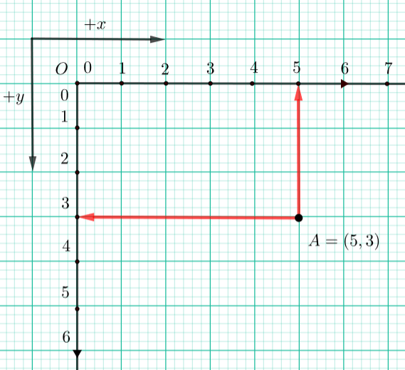

Pisanje PyGame programa¶
Osnovna struktura PyGame programa¶
Kako bi programi za koje pišemo koristili biblioteku (modul) PyGame, prvo što trebamo učiniti je uvoziti modul PyGame na početku programa. To nam omogućava korištenje svih funkcija i konstanti definiranih u modulu PyGame.
Svaki program koji koristi biblioteku PyGame, po priključivanju modula a prije pozivanja drugih funkcija treba izvršiti nekoliko koraka da bi inicijalizirao biblioteku, zadao dimenzije prozora u kojem će program crtati i postavio naslov tog prozora. Isto tako, na kraju programa ima nekoliko koraka koji govore programu da treba čekati dok korisnik ne klikne na dugme za zatvaranje prozora, a zatim da zatvori prozor i isključi biblioteku PyGame.
Ovi koraci na početku i kraju rada isti su ili vrlo slični u svakom programu. Da bismo početnicima olakšali korištenje PyGame biblioteke, također ćemo koristiti malu dodatnu biblioteku pod nazivom PyGameBg. Zahvaljujući ovoj biblioteci, umjesto da nabrojimo sve potrebne korake, dovoljno je uvesti modul pygamebg u naš program (kao i pygame), a zatim pozvati samo jednu funkciju iz modula pygamebg na početku i jednu na kraju programa. To čini programe kraćim i jednostavnijim, omogućavajući nam da se usredotočimo na dio programa koji je specifičan za zadati zadatak.
Također možete pokrenuti programe koji koriste PyGameBg biblioteku u vašem lokalnom razvojnom okruženju (npr. IDLE). Sve što trebate učiniti je instalirati PyGameBg biblioteku na isti način na koji ste instalirali PyGame biblioteku, tj. upisivanjem pip3 install pygamebg u “cmd”. Kad instalirate ovu biblioteku, možete kopirati odabrani program u svoj urednik i spremiti ga na svoje računalo. Potom možete po želji izmijeniti program, spremiti različite verzije programa i isprobati ih pokretanjem programa.
Evo kako izgleda program PyGame koji crta jedanu kosu liniju i čeka da korisnik zatvori prozor.
Krenimo s naredbama ovog programa kako bismo detaljnije objasnili što rade.
Prvo imamo grupu naredbi koje će se morati pojaviti na početku svakog programa:
naredbom
import pygame as pgpriključujemo modul pygame u naš program. Ovdje koristimo malo drugačiji oblik naredbe import od onog koji smo prije koristili. Također, modulu pygame dajemo skraćeno ime, pg, i od tada koristimo taj skraćeni naziv u programu kao naziv modula. Mogli smo staviti i samoimport pygamebez promjene u funkcionalnosti, ali tada bismo morali pisati pygame.Color, pygame.draw.line, itd. umjesto pg.Color, pg.draw.line i slično.naredbom
import pygamebgpriključujemo modul pygamebg u naš program. Ova naredba se zajedno sa prethodnom može spojiti u jednu:import pygame as pg, pygamebg, a mi ćemo to često činiti.Naredba
canvas = pygamebg.open_window(400, 400, "Pygame")poziva funkcijuopen_windowiz modulapygamebg, koju smo dodali u program. U ovoj funkciji se obavljaju sve portebne pripremne radnje koje smo ranije spominjali. Parametri funkcije su širina, visina i naslov prozora koji se pozivanjem ove funkcije otvara. Varijablu canvas koju ova funkcija vraća, kasnije koristimo u programu da bismo u tom prozoru crtali.
Slijedi skupina izjava koja se razlikuje u svakom programu i određuje što taj određeni program zapravo radi. Naš prvi program crnu liniju crta na bijeloj pozadini, a to je postignuto kroz ovaj dio programa:
naredba
canvas.fill(pg.Color("white"))oboja prozor u bijelo. Crtanje često počinje ovom naredbom (možemo koristiti drugu boju)naredba
pg.draw.line(canvas, pg.Color("black"), (100, 100), (300, 300), 5)crta liniju.
Naredbe poput ove uskoro će biti detaljno objašnjene, ali ako se osjećate nestrpljivo, možete pokušati izmijeniti vrijednosti parametara u programu ili dodati nove, slične naredbe i sami otkriti kako rade ove funkcije crtanja.
Na kraju programa imamo poziv još jedne funkcije iz modula pygamebg: pygamebg.wait_loop(). U ovoj funkciji se nalaze naredbe koje omogućavaju da se crtež pojavi na prozoru i da prozor ostane otvoren dok korisnik ne klikne na tipku za zatvaranje. Nakon zatvaranja prozora, funkcija deaktivira sve korištene dijelove PyGame biblioteke (isključuje ih).
Svi će naši PyGame programi završiti pozivom funkcije pygamebg.wait_loop() ili nekom sličnom funkcijom. Nakon izvršenja ove funkcije, program se može nastaviti izvoditi bez biblioteke PyGame u tekstnom prozoru, ako je potrebno.
Kordinatni sustav¶
Koordinate su za nas vrlo važan pojam, a susrest ćemo se s njima otprilike u svakom programu PyGame. Položaj svih objekata (točaka, segmenata linija, krugova, teksta, uvezenih slika itd.) U prozoru određuje se njihovim koordinatama u koordinatnom sustavu prozora.
Koordinatni sustav prozora je sličan, ali se ipak malo razlikuje od onog koji se koristi u matematici. Položaj točke određuje se i uređenim parom njegovih koordinata i u ovom slučaju (kordinatom x, tj. apscisom i koordinatom y, tj. ordinatom). Mjerna jedinica je jedan piksel.
U računalnoj grafici, koordinatni sustava nalazi se u gornjem lijevom kutu prozora. Koordinata \(x\) povećava se kada se krećemo udesno (kao u matematici), ali koordinata \(y\) smanjuje se kada se krećemo prema gore, tj. povećava se kada se krećemo prema dolje, što je drugačije od uobičajenog koordinatnog sustava u matematici. Neka je zadana točka \(A(5, 3)\). Ako bismo pomaknuli ovu točku od 1 piksela prema gore i zadržali njenu \(x\) koordinatu, nove koordinate točke A bile bi \(A(5, 2)\). Ako pomaknemo točku \(A\) 2 piksela prema dole, nove bi koordinate bile \(A(5, 4)\). Dakle, prva koordinata točke određuje koliko je točka udaljena od lijevog ruba prozora, a druga koordinata koliko je točka od gornjeg ruba prozora.
{kind=link}
U programskom jeziku Pythona, par koordinata točaka može biti predstavljen ili dvokčlanom n-torkom (3, 5), ili dvočlanom listom [3, 5]. U prethodnom su primjeru dvije krajnje točke linijskog segmenta davale dve dvočlane n-torke ((100, 100) and (300, 300)).
Često trebate odrediti pravokutnik čije su strane paralelne s koordinatnim osima. Takav se pravokutnik specificira pomoću n-torke ili liste koje sadrže četiri broja: (x, y, w, h) ili [x, y, w, h]. Pri tome \(x\) i \(y\) predstavljaju koordinate gornjeg lijevog kuta pravokutnika, a \(w\) i \(h\) predstavljaju širinu i visinu pravokutnika u pikselima. Na primjer, pravokutnik na sljedećoj slici može se navesti kao pygame.Rect(2, 1, 4, 3), ili jednostavno kao (2, 1, 4, 3) ill [2, 1, 4, 3].

Sljedeći program može vam pomoći razumjeti koordinate. Pokrenite program klikom na gumb “Prikaži primjer”, a zatim pomaknite miš i promatrajte kako se koordinate mijenjaju. Prozor po kojem se miš kreće je u veličini 300 puta 300 piksela. Vrijednosti x i y koordinata pojavljuju se i u naslovnoj traci prozora i pored pokazivača miša. Zapis koji se pojavi pored pokazivača je u obliku naredenog para, kao što će biti u programima kad odredimo jednu točku.
Testirajte svoje znanje o koordinatama kroz sljedećih nekoliko pitanja.

-
Q-34: Povežite boju kružića s koordinatama njegovog centra (dimenzije prozora su 300 puta 300 piksela).
Pokušaj ponovo!
- crvena
- (30, 40)
- zelena
- (50, 280)
- plava
- (230, 20)
- crna
- (150, 170)
Ako je prozor širine 200 piksela i visine 300 piksela, koje su koordinate njegove središnje točke (rezultat napišite kao uređeni par)?
- Koordinata x raste s lijeva na desno.
- Točno.
- Koordinata y smanjuje se od vrha do dna zaslona.
- Koordinata y se povećava od vrha do dna zaslona.
- Točke na gornjem rubu zaslona imaju y koordinatu jednaku 0.
- Točno.
- Točke na desnom rubu zaslona imaju x koordinatu jednaku 0.
- Točke na desnom rubu zaslona imaju najveću x koordinatu.
- Točka u donjem desnom kutu zaslona ima najveće obje koordinate.
- Točno.
Q-35: Označite točne tvrdnje.
-
Q-36: Ako je širina prozora `w`, a visina` h ', uparite uglove zaslona s njihovim koordinatama.
Pokušaj ponovo!
- gore-lijevo
- (0, 0)
- gore-desno
- (w, 0)
- dolje-lijevo
- (0, h)
- dolje-desno
- (w, h)
Određivanje boja¶
Naravno, pri crtanju se mogu koristiti različite boje. Boju možemo odrediti prema njenom nazivu (na engleskom), koji kao parametar prosljeđujemo funkciji pg.Color. Možete koristiti boje prosljeđivanjem odgovarajućeg niza (stringa): 'black' za crnu, 'white' za bijelu, 'gray' za sivu, 'blue' za plavu, 'green' za zelenu, 'orange' za narančastu, 'yellow' za žutu, i slično. Podsjetimo se, nizovi se navode između jednostrukih ili dvostrukih navodnika (npr. ‘blue’ i “blue” mogu se koristiti naizmjenično). Na primjer, ako pozovete funkciju py.draw.line(canvas, pg.Color('blue'), (0, 0), (200, 200), 3) segment plave linije, širok 3 piksela, čije su krajnje točke koordinate su \((0, 0)\) i \((200, 200)\) će se pojaviti u prozoru.
Neka imena boja koja se obično koriste u programima su:
|
Crna |
|
Bijela |
|
Crvena |
|
Zelena |
|
Plava |
|
Cyan |
|
Ljubičasta |
|
Žuta |
|
Narančasta |
Poigrajte se bojama u sljedećem programu i pokušajte obojiti prozor u neke ili sve ove boje.
Jedna od pogrešaka koja se često pravi pri pisanju prvih programa PyGame je pisanje pg.color malim slovima prilikom određivanja boje, umjesto upotrebe velikih slova - pg.Color. To uzrokuje pogrešku s porukom AttributeError: '' objekt nema atribut 'color'.
Još jedna česta pogreška je da naziv boje ne navedete pod navodnicima (na primjer, da navedete pg.Color (white)). Tada se uz pogrešku pojavljuje poruka NameError: name 'white' is not defined on line 8.
Pored ovih boja, možete koristiti i mnoge druge. Ukupni broj boja koji postoje u računalima je ogroman i iznosi oko 16 milijuna. Od njih možemo imenovati samo nešto više od 600 različitih boja (kompletan popis nalazi se u datoteci colordict.py, koju lako možete pronaći na Internetu, a ako imate instaliran PyGame, imate ga i na računalu).
Sve ove imenovane boje možemo odrediti brojevima, kao i sve ostale bez imena. Za to se najviše koristi tzv. model RGB boja. Naime, u računalnoj grafici svaka se boja dobiva miješanjem određene količine crvene, zelene i plave, po čijim imenima se zove RGB model. Na primjer, kombiniranjem crvenog i zelenog svjetla nastaje žuta svjetlost, kombiniranjem crvene i plave svjetlosti nastaje ljubičasta, a kombiniranjem plave i zelene proizvodi cijan. Kombiniranjem svjetla sve tri osnovne boje dobiva se bijelo svjetlo, dok se crno svjetlo dobije kada su sve tri svjetlosti isključene. Siva svjetlost dobiva se miješanjem jednakih količina crvene, zelene i plave svjetlosti.

To znači da možemo opisati boju određivanjem tri broja (u ovom slučaju brojevi od 0 do 255), koji predstavljaju količinu crvene, zelene i plave boje u boji koju definiramo. U programskom jeziku Python boja se može prikazati i u obliku trostruke uređene n-torke (npr. (123, 80, 56)), ili tročlane liste (npr. [123, 80, 56]). N-torku ili listu možete navesti direktno kao argument funkcije koji odgovara boji, ili ga možete pohraniti u varijablu i kasnije koristiti ime varijable. Na primjer, dodjeljivanjem CYAN = (0, 255, 255), definiramo cijan boju specificirajući odgovarajuće količine crvene, zelene i plave svjetlosti sadržane u ovoj boji (budući da je mješavina plave i zelene, nema crvene uopće, a plave i zelene komponente su na maksimumu). Nakon toga ovu boju možemo koristiti i u pozivu funkcija (na primjer, canvas.fill(CYAN)). Imena tih varijabli ne moraju se upotrebljavati velikim slovima, ali to je postala uobičajena praksa u pisanju programa Python. U programima koje ćete vidjeti u nastavku naići ćete na takve definicije.
Boja se također može odrediti sa četiri broja, na primjer CYAN = (0, 255, 255, 10). Posljednji, četvrti parametar (također u rasponu od 0 do 255) određuje prozirnost boje, tj. cijan boja dana na ovaj način je blago prozirna.
Sad ćemo sažeti RGB vrijednosti nekih uobičajenih boja.
|
crvena |
|
zelena |
|
plava |
|
žuta |
|
cijan |
|
ljubičasta |
|
bijela |
|
crna |
|
siva |
|
narančasta |
|
roza |
Primijetite da su nijanse sive prepoznatljive po tome što su količine crvene, zelene i plave u njima jednake. Što je manja količina, tamnija je nijansa i obrnuto - veće jednake količine crvene, zelene i plave boje predstavljaju svjetlije nijanse sive (na temelju RGB vrijednosti, crno-bijelo se može smatrati najmračnijom i najsvjetlijom nijansom sive).
U sljedećem programu možete pokušati odrediti boje u RGB formatu. Pored bojenja prozora u nekim ili svim navedenim bojama, možete unijeti (bilo koje) druge trostruke vrijednosti između 0 i 255.
Pri odabiru boja koje želite koristiti u svojim programima, alat za odabir boja može vam pomoći. Na web lokacijama nalazi takav alat (potražite alat za color picker), a možete koristiti i onu iz programa Paint. Možete to isprobati sada - odaberite boju i kopirajte vrijednosti R, G, B u program.
Uspostavite svoje znanje o bojama odgovaranjem na sljedećih nekoliko pitanja.
-
Q-37: Uparite boje.
Pokušaj ponovo!
- crna
- (0, 0, 0)
- plava
- (0, 0, 255)
- crvena
- (255, 0, 0)
- zelena
- (0, 255, 0)
- (1, 12, 123)
- Pokušaj ponovo
- (128, 0, 128)
- Pokušaj ponovo
- (0, 0, 128)
- Pokušaj ponovo
- (145, 145, 145)
- Točno
Q-38: Koja je od sljedećih boja nijansa sive?
- crvena i zelena
- Pokušaj ponovo
- plava i crvena
- Točno
- zelena i plava
- Pokušaj ponovo
- crvena, zelena i plava
- Pokušaj ponovo
Q-39: Koje se boje miješaju da bi se stvorila ljubičasta (magenta) boja?
- Plavkasta
- Pokušaj ponovo
- Crvenkasta
- Pokušaj ponovo
- Žućkasta
- Točno
- Zelenkasta
- Pokušaj ponovo
Q-40: Kako bi se boja [240, 230, 18] najbolje mogla zvati?
Dakle, boje su predstavljene s tri, a koordinate točaka s dva broja. Provjerite razumjete li to odgovaranjem na sljedeće pitanje.
-
Q-41: uparite boje i koordinate, ako je ekran širine 300 i visine 200 piksela.
Pokušaj ponovo!
- Crna boja
- [0, 0, 0]
- Gornji lijevi kut ekrana
- [0, 0]
- Ljubičasta boja
- (255, 0, 255)
- Donji desni kut ekrana
- (300, 200)